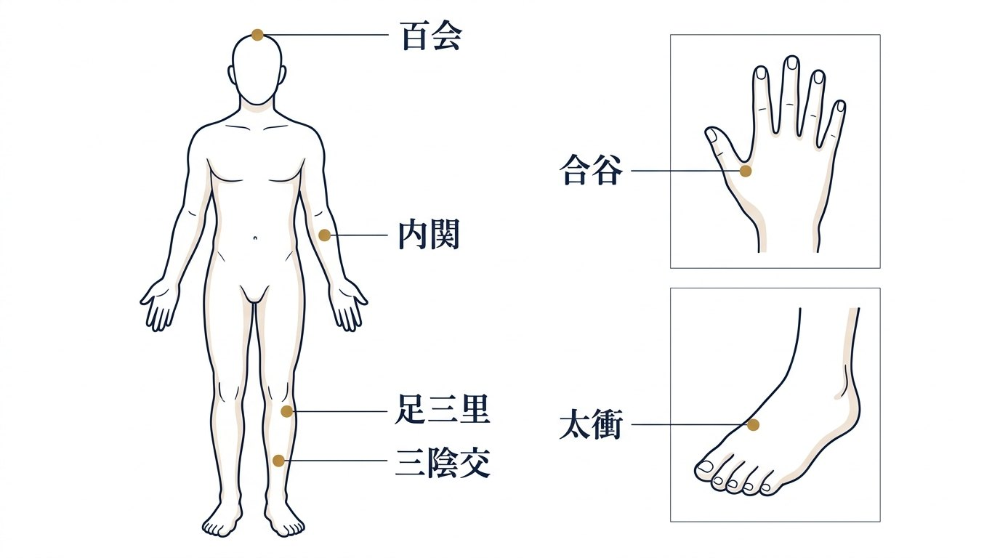

白血病の鍼灸
血液・骨髄で白血病細胞が異常増殖し正常な血球が減る血液のがんです。専門病院での標準治療が絶対最優先で、寛解期・主治医許可下のみ支えます。
まず知っておきたい要点と改善の流れ
白血病は、骨髄や血液中で白血病細胞が異常増殖し、正常な赤血球・白血球・血小板が減少する血液のがんです。進行速度と細胞の種類により急性・慢性、骨髄性・リンパ性に大別されます。慢性骨髄性白血病のフィラデルフィア染色体や成人T細胞白血病のHTLV-1ウイルス、放射線・ベンゼン・過去の抗がん剤歴などが関与し、専門病院での抗がん剤・分子標的薬・造血幹細胞移植が不可欠です。（公式解説）
このようなお悩みはありませんか？
- ✓息切れ・動悸・倦怠感など貧血症状や、あざ・鼻血・歯肉出血がある
- ✓原因不明の発熱や感染、リンパ節の腫れ・骨や関節の痛みがある
- ✓専門病院で化学療法・分子標的薬・移植などの治療を受けている
- ✓寛解期や維持療法中の倦怠感・不安・こわばりを主治医許可下で和らげたい
当院の施術アプローチ・改善の流れ
なぜ鍼灸で改善へ向かうのか？（作用機序の図解）
白血病に対する鍼灸は、心拍変動・血管トーンを整える自律神経サポート機序を通じて、お体本来の回復力を引き出します。

循環器専門医の標準治療を絶対前提とし、手首や背部の安全な経穴へ低刺激でアプローチします。
心臓への過剰な交感神経刺激を穏やかに鎮め、心拍リズムと血管緊張の急変を抑えます。
ストレスで固まりやすい胸郭や横隔膜の緊張を解き、酸素摂取とリラックス反応を促します。
内服管理を厳守しながら、疲労やストレスが引き金となる症状不安の軽減を支えます。
院長YouTube解説・関連動画
白血病では全身に様々な症状が現れる
白血病では全身に様々な症状が現れます。
白血病は正常な血球が減ってしまいます。そのため、息切れや動悸、倦怠感、あざ、出血斑、鼻血、貧血、発熱などの症状が現れます。
白血病になると異常ながん細胞が各臓器に運ばれることになります。そのため、腹部の腫れやしこり、痛みや歯茎の腫れや痛み、腰痛、関節痛、頭痛、吐き気、嘔吐、リンパ節の腫れやしこりなどの症状も現れます。
慢性の白血病の場合、症状はゆっくりと進んでいきます。そのため慢性の場合は、症状がほとんど見られないということもあります。
白血病はいくつかの異なるタイプがあり、その症状も多岐にわたります。まずは、白血病の一般的な症状について説明します。
一般的な症状
白血病は、体内で白血球が異常に増加する血液のがんです。この異常な白血球は、正常な白血球、赤血球、血小板の形成を妨げ、多くの問題を引き起こします。
1. 疲労と弱さ
異常な白血球によって正常な赤血球が減少すると、酸素輸送能力が低下し、疲労や体力の低下が現れる場合があります。
2. 皮膚や目の黄ばみ（黄疸）
肝機能が低下すると黄疸が現れることがあります。
3. 出血と打撲
血小板が減少すると、簡単に出血や打撲が生じやすくなります。
4. 体重減少
食欲がなくなることが多く、それが体重減少につながる場合もあります。
5. 高熱と汗
感染症に対する防御力が低下し、高熱を引き起こす場合があります。
6. 痛み
骨や関節、腹部の痛みが起こることがあります。
白血病には色々なタイプがあります。各タイプの白血病の症状についてはいかに説明します。
・急性リンパ芽球性白血病（ALL）
発熱: 急性の白血病では発熱が一般的です。
無力感: 極度の疲労を感じることが多いです。
皮膚の褪色: 貧血により皮膚が青白く見えることがあります。
・急性骨髄性白血病（AML）
皮膚の病変: 特定のAMLのサブタイプでは、皮膚に病変が出ることがあります。
呼吸困難: 肺に液体がたまることが原因で呼吸困難が生じる場合があります。
・慢性リンパ性白血病（CLL）
リンパ節の腫れ: 首、腋窩、鼠径部のリンパ節が腫れることがよくあります。
体重減少: 高度な段階では体重減少が見られる場合があります。
・慢性骨髄性白血病（CML）
脾臓の腫大: 脾臓が腫れて腹部が大きくなることがあります。
食欲不振: 進行した場合には食欲が減少することが多いです。
症状は他にあるたくさんの病気とも共通しているため、白血病であるという判断はこれらの症状だけで行われるわけではありません。一般的には、血液毛骨髄を調べ、画像などを見ることで判断が行われます。
白血病の症状は多岐にわたり、各種類の白血病でもさまざまな症状が現れます。
白血病を判断するために、はじめに調べることは血液です。まず、赤血球、血小板、白血球の数を調べて、異常ながん細胞がないか、どのような種類の細胞が多くてどのような種類の細胞が少ないのかなどを調べていきます。
次に、染色体や遺伝子の変異や細胞の表面の免疫に関係している物質を調べます。脊髄や骨盤に針を刺して脊髄液や脊髄組織を取り調べていきます。
このような手順で調べていくことで、白血病であるかどうかの判断や、白血病のタイプ、色々な合併症など詳しい判断をすることができます。
効果的な薬を調べるときや改善の結果を判定するときにも、血液と染色体や遺伝子の変異や細胞の表面の免疫に関係している物質を調べることは非常に有効です。
そのため、初めの判断だけでなく白血病の改善を行っている期間にも繰り返し調べることが多いです。
必要な場合は、エックス線やCT、PET-CT、超音波、脳や脊髄の髄液なども調べます。これらの方法は、他の臓器にがん細胞が運ばれていないかなどについて調べる方法で、他の臓器に白血病のがん細胞が送られてしまい合併症を起こしてしまうことを避けるために有効です。
白血病の初期段階の場合は血液を調べても、白血球の数が少なくなったり貧血であるということだけの結果が出ることがあります。
そのため、白血病の疑いがある場合は骨髄穿刺をして調べることが必要です。骨髄に白血病の細胞が1つでもある場合は急性白血病と判断されます。しかし、実際には正常な幼若細胞と、白血病の細胞を正確に判別することは難しいことです。
ほとんどの場合は正常な幼若細胞が5%以上あることはありません。5%以上、正常な幼若細胞が骨髄の中に存在している場合白血病であると判断されます。
正常な幼若細胞が30%以上ある場合は、急性白血病と判断され、30%未満の場合は、骨髄異形成症候群と判断されます。
白血病の基本的な改善方法は、薬です。白血病の薬には、直接がん細胞をやっつける抗がん剤や特定の細胞を選んでやっつける分子標的薬などがあります。
白血病のそれぞれのタイプや年齢、病状、合併症などを考慮して、医師との相談の元で薬を選択し組み合わせて使用します。
最近では色々な分子標的薬が出てきており、どの薬が効果を発揮するかどうかを調べてから使うことができるようになりました。薬での改善が十分な効果を発揮すれば、再発の防止に取り組みながらではありますが社会復帰することができます。
造血幹細胞移植も白血病の改善に有効な方法です。造血幹細胞移植は、まずはじめに大量の抗がん剤や放射線を使い、白血病細胞を正常な骨髄細胞ごとやっつけます。そして、後から健康な造血幹細胞を移植して造血機能を復元するという方法です。
移植する細胞の種類によって、骨髄移植、末梢血幹細胞移植、臍帯血移植、ミニ移植など、色々な方法があります。病気の種類や症状、ドナーなどを考えて、どの方法で移植を行うか選びます。
造血幹細胞移植の良い点は、移植した細胞の免疫作用によって再発が起こりにくいということです。ただし、移植した後に大きな感染症や拒絶反応などの大きな合併症が起こることもあります。そのため、移植をした後も長い期間病院に通う必要があります。
また、造血幹細胞が適しているとされる症例は限定されています。一般的に造血幹細胞移植で改善を行うケースは、抗がん剤や分子標的薬で効果がない時や再発して急に悪化した時などです。
現在、急性白血病は改善することができる病気です。しかし、専門の病院できちんと改善に取り組んだ場合です。専門の病院に行き、きちんと改善に取り組むことが大切なのです。
急性白血病を発症すると、体の中に約1012～1013個の白血病細胞が存在するといわれています。改善を行うことで末梢血を正常にして、骨髄の芽球が5%以下にすることを目標として、改善していきましょう。
白血病の改善には多くの選択肢があり、各種類やステージによっては専門的な改善の戦略が必要です。この情報は専門家による判断や改善に代わるものではありません。以下に白血病の主な改善法について詳しく説明します。
基本的な改善の方針
抗がん剤: 白血病の最も一般的な改善法であり、薬を用いてがん細胞を消滅させる方法です。副作用は脱毛や悪心、嘔吐、血液の数値低下などです。
放射線: この方法では、がん細胞に放射線を照射してがん細胞を消滅させます。全身照射もあります。この方法は通常、骨髄移植の前に行われます。副作用は肌の赤みや痛み、疲労感などです。
骨髄移植（幹細胞移植）: 自分の体の中で健康な骨髄を生成する能力が失われた場合、他の人から骨髄を移植します。骨髄移植には、本人から採取した骨髄幹細胞を使う自家幹細胞移植と寄付された骨髄幹細胞を使用する同種幹細胞移植があります。副作用は感染症のリスク増加や拒絶反応です。
生物学的な改善方法: 人工的に作られた物質や体内の物質を使用してがん細胞を攻撃する方法です。特定のがん細胞に結合してそれを破壊する抗体であるモノクローナル抗体、免疫応答を高めることでがん細胞を攻撃するインターフェロンがあります。
標的に対しての改善方法: 特定のがん細胞の分子標的に対して働く薬を使用して改善を行います。チロシンキナーゼ阻害剤やBCR-ABL阻害剤などがあります。CMLで使用されるチロシンキナーゼ阻害剤は、がん細胞の成長を助ける酵素を阻害します。CMLや一部のALLに効果的なBCR-ABL阻害剤は特定の遺伝子変異を持つ白血病細胞に作用します。副作用は高血圧や肝機能の異常です。
白血病の改善は複雑であり、一人一人に合わせてカスタマイズして改善を行うことが大事です。
がん性疼痛・緩和ケアの全身アプローチツボ図解
実際の施術ではお一人おひとりの体質・症状に合わせて選穴しますが、がん性疼痛・緩和ケアにおける標準治療併用の全身サポートの臨床でよく用いられる代表的なツボの目安です。

📌 代表的なツボの詳細一覧表を開く（6穴） ▼
| ツボ名 | 位置の目安 | 主な狙い | セルフケアの注意点 |
|---|---|---|---|
| 百会（ひゃくえ） | 頭頂部の中央 | 痛みへの不安・気分の落ち込み・睡眠の質サポート | 体力を消耗しない極低刺激で穏やかに整えます。 |
| 内関（ないかん） | 手首の横ジワから指3本分肘寄りの中央 | 吐き気・胸の苦しさ・オピオイドに伴う不快感軽減 | 点滴や採血部位を避けて安全に刺激します。 |
| 合谷（ごうこく） | 手の甲、親指と人差し指の間 | 内因性鎮痛系（エンドルフィン等）の活性化 | 腫瘍部位や転移部位への直接刺鍼は行いません。 |
| 足三里（あしさんり） | 膝の下外側、指4本分下 | 胃腸機能・オピオイド便秘予防・体力維持 | 好中球・血小板低下時は刺さない温熱や指圧に切り替えます。 |
| 三陰交（さんいんこう） | 内くるぶしの上から指4本分上 | 下半身の冷え・睡眠・全身の自律神経バランス | 浮腫が強い部位は避け皮膚を傷つけないよう配慮します。 |
| 太衝（たいしょう） | 足の甲、親指と人差し指の骨の間 | 痛みに伴う緊張・怒りや焦燥感の鎮静 | 主治医・緩和ケアチームの鎮痛薬治療と併用します。 |
国際査読論文の科学的エビデンス
国際的な医学データベース（PubMed・Cochrane等）で報告されているがん性疼痛・緩和ケアにおける標準治療併用の全身サポート領域の代表的な査読済み鍼灸研究をまとめています（標準治療との併用や研究上の限界を含めて正確に掲載）。
📚 査読論文データ・PubMed出典リンクを開く（4件） ▼
| 年・研究デザイン | 対象・規模 | 主な結果 | 限界・出典 |
|---|---|---|---|
| 2019年 大規模多施設RCT | 慢性安定狭心症 398名解析（標準薬物療法併用） | 16週時点の4週間発作減少は実鍼群がシャム群比5.18回・待機群比5.63回多く有意改善（P<0.001）。 | 標準薬物療法への併用（補完）試験であり単独療法ではない。 JAMA Intern Med (PMID: 31355870) |
| 2007年 シャム対照RCT | 本態性高血圧 140名完了（ドイツ・24時間ABPM） | 治療終了時の24時間血圧はシャム比SBP -6.4mmHg・DBP -3.7mmHg有意低下（P<0.001）。 | 終了3〜6か月で治療前水準へ戻るため継続ケアが必要。 Circulation (PMID: 17548730) |
| 2015年 メタ解析 | 高血圧 23 RCTs（n=1,788） | 降圧薬＋実鍼は降圧薬＋シャム比でSBP -7.47mmHg・DBP -4.22mmHg有意低下。鍼単独は降圧薬と同等・根拠不十分。 | 盲検化・異質性に課題。降圧薬の自己中断は厳禁。 PLoS One (PMID: 26207806) |
| 2025年 メタ解析 | 心拍変動（HRV）10 RCTs（n=744） | 自律神経全体の適応指標SDNNを有意に改善、重篤な有害事象なし。 | LF・HFには不確実性が高くさらなる検証が必要。 Front Neurosci (PMID: 41230507) |
参考文献・出典
- 銀座そうぜん鍼灸院「白血病の公式解説ページ」
- 2019年 大規模多施設RCT（慢性安定狭心症 398名解析（標準薬物療法併用））— JAMA Intern Med (PMID: 31355870)
- 2007年 シャム対照RCT（本態性高血圧 140名完了（ドイツ・24時間ABPM））— Circulation (PMID: 17548730)
- 2015年 メタ解析（高血圧 23 RCTs（n=1,788））— PLoS One (PMID: 26207806)
- 2025年 メタ解析（心拍変動（HRV）10 RCTs（n=744））— Front Neurosci (PMID: 41230507)
よくある質問（FAQ）
Q. 白血病の治療中に鍼灸を受けることはできますか？▼
Q. 原因不明のあざや発熱が続く場合はどうすればよいですか？▼
あわせて読まれる関連疾患（循環器のお悩み）
骨髄の造血幹細胞が減り赤血球・白血球・血小板すべてが減少する指定難病です。専門医治療を最優先とし、安定期・主治医許可下で支えます。
首の骨の中を通る椎骨動脈の内膜が裂ける重篤な血管疾患です。突然の頭痛は即救急受診が必須で、首への施術や操作は絶対禁忌です。
夜間や安静時に心室細動を起こし得る遺伝性不整脈疾患です。循環器専門医での厳重な管理を最優先に、安定期のストレス管理を支援します。
おへそが飛び出し腸管などが脱出する状態です。激しい痛みや戻らない膨らみは緊急受診が必須、安定期の腹圧対策等を補完支援します。
動脈血中の酸素が不足した状態です。医療機関での酸素投与と原因疾患の治療を最優先に、安定期の呼吸環境や疲労感をサポートします。
水分の過剰摂取で血液のナトリウム濃度が急低下する危険な状態です。急性期は救急対応が最優先で、安定期のストレス管理を支援します。
おひとりで悩まず、まずはご相談ください
銀座本院・川口・大宮・横浜・博多・田無の各院でご予約を承っております。